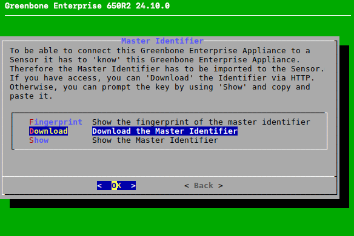
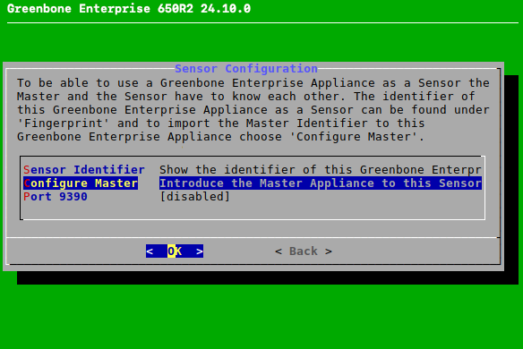
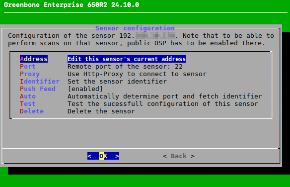
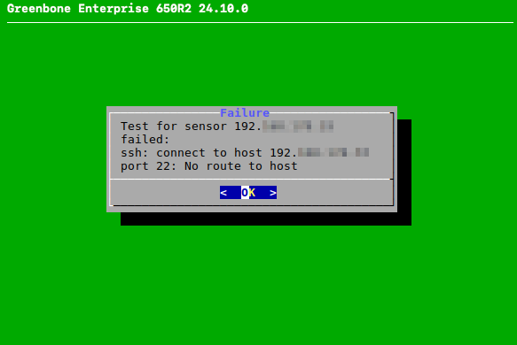
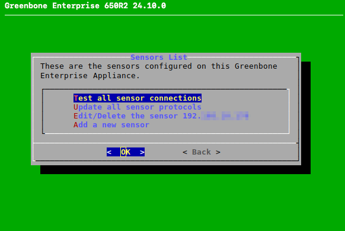
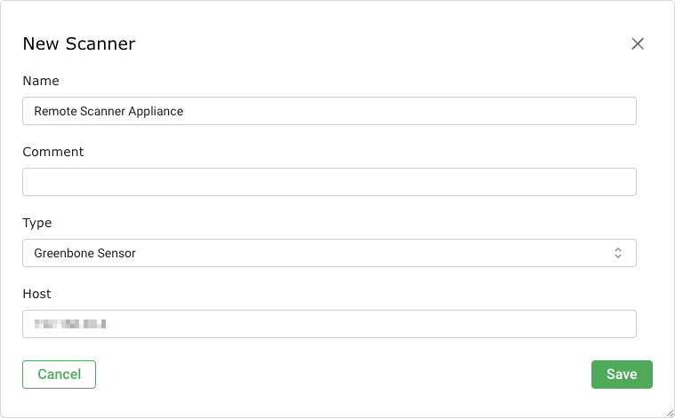
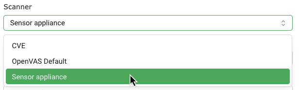

15 Использование настройки главного датчика¶
Примечание
В этой главе описаны все возможные опции меню.
Однако не все модели устройств используют все эти параметры меню. обзор модели Предоставляет информацию о том, доступна ли конкретная функция в используемой модели устройства.
Из соображений безопасности зачастую невозможно напрямую сканировать диапазоны сети. Например, может быть запрещен прямой доступ к Интернету. Для решения данной проблемы АК-ШУМКАР включает питание распределенной системы: Два или более устройств в разных сегментах сети могут быть безопасно соединены для запуска тестов на уязвимости для тех сегментов сети, которые в случае отключения отключаются.
В этом случае одно устройство удаленно управляется одним или несколькими другими устройствами. Управляющее устройство называется «главным», управляемое устройство — «датчиком».
Владелец
Все модели приборов АК-ШУМКАР 400/DECA могут использоваться в качестве мастер-класса (см. гл. 3).
Датчик
В качестве датчика можно использовать все модели приборов, кроме АК-ШУМКАР ONE.
Модели приборов АК-ШУМКАР 35 и 25В могут использоваться только в качестве датчика и всегда контролируются мастером.
Все датчики могут управляться непосредственно мастером, включая основное или ручное обновление каналов, а также обновление ОС «Ак Шумкар» (ГСН).
Датчику не требуется какое-либо сетевое подключение, кроме как к главному устройству и через кабель.
Датчик не требует каких-либо дополнительных действий после первоначальной настройки.
Если датчик должен выполнять сканирование удаленно, его необходимо настроить как удаленный сканер.
Пользователь может настроить проверку удаленного сканера индивидуально с помощью веб-интерфейса мастера в зависимости от требований и возможностей.
Удаленный сканер запускает сканер и выдает результаты на главное устройство, где обрабатывается вся информация об уязвимостях.
Подключение удаленным сканером осуществляется с использованием протокола Open Scanner Protocol (OSP) через SSH.
Соединение между мастером и датчиком осуществляется по протоколу Secure Shell (SSH) через порт 22/TCP. Для обратной совместимости можно использовать порт 9390/TCP (см. главу 15.3).
Чтобы разграничить терминологию датчика и удаленного сканера:
- Датчики
Эта функция требует настройки связи ведущий-датчик с использованием меню администрирования ГСН как ведущего устройства, так и датчика. Затем эта функция поддерживает удаленную подачу синхронизации и управление обновлением датчика.
- Удаленные сканеры
Эта функция требует настройки удаленного сканера с помощью веб-интерфейса ведущего устройства. Эта функция выполняется с помощью датчика.
15.1 Настройка настройки главного датчика¶
Мастера можно связаться с датчиком следующим образом:
Откройте меню администрирования ГСН ведущего устройства и датчика (см. главу). 6.1.2.2).
В меню администрирования ГСН мастер выбирает Настройка и нажмите Входить.
Выбирать Владелец и нажмите Входить.
Выбирать Главный идентификатор и нажмите Входить.
Выбирать Скачать и нажмите Входить (видеть Рис. 15.1).

Рис. 15.1 Мастер настройки¶
Откройте веб-браузер и введите отображаемый URL-адрес.
Загрузите PUB-файл.
→ При включении переключателя в меню администрирования ГОС мастер отображает отпечаток переключателя для проверки.
Важный
Не подтверждайте отметку переключателя до тех пор, пока печать ключа не будет установлена в датчике.
В меню администрирования датчика ГСН выберите Настройка и нажмите Входить.
Выбирать Датчик и нажмите Входить.
Выбирать Мастер по настройке и нажмите Входить (видеть Рис. 15.2).

Рис. 15.2 Настройка датчика¶
Выбирать Загрузить и нажмите Входить.
Откройте веб-браузер и введите отображаемый URL-адрес.
Нажмите Просмотреть…, выберите ранее загруженный PUB-файл и нажмите Загрузить.
→ При включении переключателя в меню администрирования ГОС на датчике отображается отпечаток переключателя для проверки.
Сравните отпечаток пальца с отпечатком, отображаемым в меню печати администрирования ГСН ведущего устройства.
Если отпечатки текста происходят, нажмите Входить в левом меню администрирования ГСН.
В меню администрирования датчика ГСН выберите Сохранять и нажмите Входить.
Выполните действие дважды: нажмите Вкладка и нажмите Входить.
Выбирать Услуги и нажмите Входить.
Выбирать SSH и нажмите Входить.
Выбирать Состояние SSH и нажмите Входить.
→ На датчике включен SSH.
Выбирать Сохранять и нажмите Входить.
Нажимать Вкладка выбрать Назад и нажмите Входить.
Выбирать ОСП и нажмите Входить.
Примечание
На АК-ШУМКАР 35 и АК-ШУМКАР 25В ОСП всегда включено и не может быть отключено. Поэтому этот пункт меню недоступен в этих моделях. Продолжайте с шага 26.
Нажимать Входить чтобы отключить OSP.
→ Сообщение информирует о том, что изменения необходимо сохранить (см. главу 6.1.3).
Нажимать Входить чтобы закрыть сообщение.
Выбирать Сохранять и нажмите Входить.
→ OSP включен на датчике.
В меню администрирования ГСН мастер выбирает Настройка и нажмите Входить.
Выбирать Владелец и нажмите Входить.
Выбирать Датчики и нажмите Входить.
Выбирать Добавить новый датчик и нажмите Входить.
Введите IP-адрес или имя хоста датчика в поле ввода и нажмите Входить.
→ Отражаются дополнительные пункты меню для настройки датчика (см. Рис. 15.3, см. главу 15.2).

Рис. 15.3 Меню конфигурации датчика¶
Выбирать Авто и нажмите Входить.
→ Мастер автоматически подключается к датчику и получает идентификатор.
Отпечаток идентификатора отображается в меню администрирования ГСН мастера.
В меню администрирования датчика ГСН выберите Настройка и нажмите Входить.
Выбирать Датчик и нажмите Входить.
Выбирать Идентификатор датчика и нажмите Входить.
Выбирать Отпечаток пальца и нажмите Входить.
Сравните отпечаток пальца с отпечатком, отображаемым в меню печати администрирования ГСН ведущего устройства.
Если отпечатки текста происходят, нажмите Входить в меню администрирования ГСН мастера.
Выбирать Сохранять и нажмите Входить.
Выбирать Тест и нажмите Входить.
→ Проверяется внешний датчик.
Если тест не пройден, отображается предупреждение с молодыми людьми (см. Рис. 15,4).

Рис. 15,4 Тестирование конфигурации датчика¶
15.2 Управление всеми настроенными датчиками¶
Все датчики, настроенные на ведущем устройстве, могут звучать следующим образом:
Выбирать Настройка и нажмите Входить.
Выбирать Владелец и нажмите Входить.
Выбирать Датчики и нажмите Входить.
→ Отображаются действия для всех настроенных датчиков (см. Рис. 15,5).
Доступны следующие действия:
- Проверка всех соединений датчиков
Проверьте, правильно ли настроены все датчики. Если тест не пройден, отобразится предупреждение с участием людей.
- Обновите все протоколы датчиков
Обновите все настройки протоколов датчиков на ведущем устройстве.
- Редактировать/Удалить датчик…
Откройте меню настройки параметра датчика (см. Рис. 15.3). Доступны следующие действия:
Установка адресного датчика.
Настройка датчика удаленного порта.
Установка прокси для датчика.
Установка идентификационного датчика.
Включение/отключение автоматической ленты обновления на датчике, если лента обновляется на мастере.
Установка порта и идентификатора автоматически.
Проверка правильности конфигурации датчика.
Удаление датчика.
- Добавить новый датчик
Настроить новый датчик (см. главу 15.1).

Рис. 15,5 Управление всеми настроенными датчиками¶
15.3 Развертывание датчиков в защищенных сетях¶
При настройке главного датчика главный хранит всю информацию об уязвимостях и учетные данные. Датчик не хранит никакой информации постоянно (кроме ВТ).
В связи с этим мастером необходимо установить связь с внешней стороной (с датчиками). Вся связь инициируется от устройства на более высоком уровне безопасности до датчика на более низком уровне безопасности ведущего.
Примечание
Брандмауэр, разделяя различные зоны, должен разрешать соединения только от ведущего устройства к датчику. Никакие дополнительные соединения не должны быть разрешены на более высоком уровне безопасности.
Ведущее и сенсорное устройство получают данные по протоколу SSH. Порт 22/TCP используется по умолчанию. Для обратной совместимости можно использовать порт 9390/TCP. Это можно сделать следующим образом:
В меню администрирования датчика ГСН выберите Настройка и нажмите Входить.
Выбирать Датчик и нажмите Входить.
Выбирать Порт 9390 и нажмите Входить.
Выбирать Сохранять и нажмите Входить.
На датчиках обновления АК-ШУМКАР ENTERPRISE FEED и обновления ГСН можно загрузить как напрямую с серверов «Ак Шумкар», так и с помощью мастера. Во втором случае с серверами «Ак Шумкар» остался только мастер и передал соответствующие файлы всем подключенным датчикам.
Чтобы датчик не контактировал с серверами «Ак Шумкар», автоматическую синхронизацию можно отключить следующим образом:
В меню администрирования датчика ГСН выберите Настройка и нажмите Входить.
Выбирать Кормить и нажмите Входить.
Выбирать Синхронизация и нажмите Входить.
Выбирать Сохранять и нажмите Входить.
Кончик
На более высоких уровнях безопасности можно использовать правило источника NAT и назначение брандмауэра с использованием пакета с отслеживаемым состоянием (SPI), чтобы избежать необходимости использования маршрутов по умолчанию на устройствах.
15.4 Настройка датчика в качестве удаленного сканера¶
Примечание
Чтобы настроить датчик в качестве удаленного сканера, необходимо выполнить настройку всех шагов, описанных в главе. 15.1 должны быть завершены в первую очередь.
Датчики можно использовать в качестве модулей выносного кабеля (сканеров) в приставках к стандартным сканерам Ак-Шумкар и CVE. Для этого датчик необходимо настроить как удаленный сканер с помощью веб-интерфейса мастера.
Новый удаленный сканер можно настроить следующим образом:
Войдите в веб-интерфейс мастера.
Выбирать Конфигурация > Сканеры в меню.
Создать новый сканер, кнопку
 .
.Введите имя удаленного сканера в поле ввода. Имя (видеть Рис. 15,6).

Рис. 15,6 Настройка удаленного сканера на ведущем¶
Выбирать Датчик Ак Шумкар раскрывающийся список Тип.
Примечание
Обязательно выберите нужно Датчик Ак Шумкар. Тип ОСП-сканер не следует использовать.
Введите IP-адрес или имя хоста датчика в поле ввода. Хозяин.
Нажмите Сохранять создать удаленный сканер.
→ Сканер создан и отображается на странице Сканеры.
В строке вновь созданного удаленного сканера нажмите для проверки сканера.
→ Если настройка неправильная, сканер успешно проверен.
Кончик
Сканеры настраиваются индивидуально для каждого пользователя. Сканеры могут быть созданы для каждого пользователя или могут быть предоставлены разрешения для предоставления права использования другим пользователям (см. главу). 8.4).
15.5 Использование удаленного сканера¶
После того, как датчик настроен в качестве удаленного сканера, его можно выбрать в качестве сканера при создании новой задачи или нового аудита (см. Главы). 9.2.2 и 11.2).

Рис. 15,7 Выбор удаленного сканера для задач или аудита¶